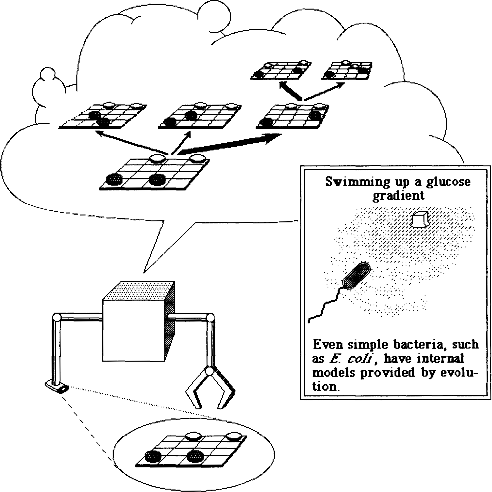
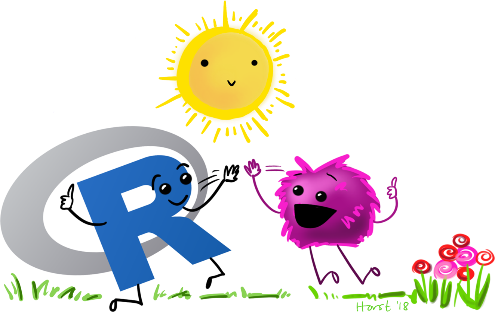

Prediction and Interaction in ABMs
Daniel Vartanian
15/04/2025
Hi there! 👋
This presentation will talk about Prediction and Interaction in the context of Agent-Based Modeling (ABM).
Here are our main topics:
- Introduction
- Prediction
- Interaction
- Conclusion
(Artwork extracted from the NetLogo Web logo)
Introduction
ODD
Overview
- Purpose and Patterns
- Entities, State Variables, and Scales
- Process Overview and Scheduling
Design Concepts
- Basic Principles
EmergenceAdaptationObjectivesLearning- Prediction
Sensing- Interaction
- Stochasticity
- Collectives
Observation
Details
- Initialization
- Input Data
- Submodels
(Based on Railsback & Grimm (2019))
Our Schedule
February 19
9 & 10 – Observation & Sensing
March 12
11 – Adaptive Behavior and Objectives
April 16
12 & 13 – Prediction & Interaction
May 21
14 & 15 – Scheduling & Stochasticity
June 18
16 – Collectives
August 13
18 – Patterns for Model Structure
September 10
19 – Theory Development
October 8
20 – Parameterization and Calibration
November 19
22 – Analyzing and Understanding ABMs
December 10
23 – Sensitivity, Uncertainty, and Robustness Analysis
Previous Concepts
Adaptive behaviors are decisions that agents make, in response to the current state of themselves and their environment, to improve (either explicitly or implicitly) their state with respect to some objective.
Businesses may make decisions to increase profit or market share, but doing so often increases the risk of losses.
Animals may seek higher food intake but must consider that eating more can also increase the risk of being eaten.
Political parties may act to increase their popularity but at the cost of compromising their core values.
Prediction
Prediction
Prediction is the process by which agents predict future conditions for adaptive behavior.
We include prediction in our design concepts because even the simplest decisions involve prediction, and assuming our agents make predictions allows us to design powerful decision making submodels.
ODD Questions
How do agents predict future conditions (environmental and internal) in their submodels for adaptive behavior? What assumptions about, or mechanisms of, the real individuals being modeled were the basis for how prediction is modeled?
(Grimm et al., 2010, 2020; Railsback & Grimm, 2019)
How does simulated prediction make use of mechanisms such as memory, learning, or environmental cues? Or is prediction “tacit”, i.e., only implied in simple rules for adaptive behavior?
(Grimm et al., 2020; Railsback & Grimm, 2019)
ODD Questions
If appropriate, what internal models are agents assumed to use to estimate future conditions or consequences of their decisions? What tacit or hidden predictions are implied in these internal model assumptions?
(Grimm et al., 2010)
Which data do the agents use to predict future conditions?
(Müller et al., 2013)
Internal Models

Internal Models
A tacit internal model simply prescribes a current action, under an implicit prediction of some desired future state, as in the case of the bacterium.
An overt internal model is used as a basis for explicit, but internal, explorations of alternatives, a process often called lookahead.
Both tacit and overt models are found in CAS [Complex Adaptive Systems] of all kinds — the actions and identity supplied by an immune system fall at the tacit end of the scale, whereas the internal models of agents in an economy are both tacit and overt.
Business Investor Model (11.5)
Interaction
Interaction
Interaction is the process by which agents communicate with or affect each other, such as by exchanging information, competing for resources, helping or fighting each other, or conducting business.
We also use “interaction” for how agents affect, and are affected by, their environment; environmental interactions such as consuming and producing resources are very important in many ABMs.
ODD Questions
What kinds of interactions among agents are assumed? Are there direct interactions in which individuals encounter and affect others, or are interactions indirect, e.g., via competition for a mediating resource?
(Grimm et al., 2010, 2020; Müller et al., 2013; Railsback & Grimm, 2019)
How do the model’s agents interact? Do they interact directly with each other (e.g., does one agent directly change the state of others)? Or is interaction mediated, such as via competition for a resource?
(Grimm et al., 2010, 2020; Railsback & Grimm, 2019)
ODD Questions
With which other agents does an agent interact?
(Grimm et al., 2020; Railsback & Grimm, 2019)
What real interaction mechanisms were the model’s representation of interaction based on? If the interactions involve communication, how are such communications represented? At what spatial and temporal scales do they occur?
(Grimm et al., 2010, 2020; Railsback & Grimm, 2019)
ODD Questions
On what do the interactions depend?
(Müller et al., 2013)
If a coordination network exists, how does it affect the agent behavior? Is the structure of the network imposed or emergent?
(Müller et al., 2013)
Climate-Rice Response Model
Conclusion
Summary of Key Takeaways
Adaptive behaviors are decisions that agents make, in response to the current state of themselves and their environment, to improve (either explicitly or implicitly) their state with respect to some objective.
Prediction is the process by which agents predict future conditions for adaptive behavior.
Interaction is the process by which agents communicate with or affect each other, such as by exchanging information, competing for resources, helping or fighting each other, or conducting business.
Closing Remarks
This presentation was created with the R programming language and the Quarto Publishing System. The code and materials are available on GitHub.

(Artwork by Allison Horst)
References
In accordance with the American Psychological Association (APA) Style, 7th edition.
Grimm, V., Berger, U., DeAngelis, D. L., Polhill, J. G., Giske, J., & Railsback, S. F. (2010). The ODD protocol: A review and first update. Ecological Modelling, 221(23), 2760–2768. https://doi.org/10.1016/j.ecolmodel.2010.08.019
Grimm, V., Railsback, S. F., Vincenot, C. E., Berger, U., Gallagher, C., DeAngelis, D. L., Edmonds, B., Ge, J., Giske, J., Groeneveld, J., Johnston, A. S. A., Milles, A., Nabe-Nielsen, J., Polhill, J. G., Radchuk, V., Rohwäder, M.-S., Stillman, R. A., Thiele, J. C., & Ayllón, D. (2020). The ODD protocol for describing agent-based and other simulation models: A second update to improve clarity, replication, and structural realism. Journal of Artificial Societies and Social Simulation, 23(2), 7. https://doi.org/10.18564/jasss.4259
Holland, J. H. (1995). Hidden order: How adaptation builds complexity. Basic Books.
Müller, B., Bohn, F., Dreßler, G., Groeneveld, J., Klassert, C., Martin, R., Schlüter, M., Schulze, J., Weise, H., & Schwarz, N. (2013). Describing human decisions in agent-based models – ODD + D, an extension of the ODD protocol. Environmental Modelling & Software, 48, 37–48. https://doi.org/10.1016/j.envsoft.2013.06.003
Railsback, S. F., & Grimm, V. (2019). Agent-based and individual-based modeling: A practical introduction (2nd ed.). Princeton University Press.
Thank You!

(Artwork by Allison Horst)